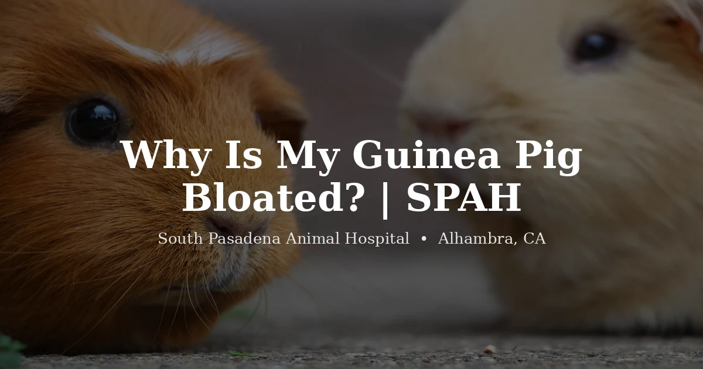

October 14, 2026 · 6 min read
Why Is My Guinea Pig Bloated?

Of everything we see in guinea pigs, bloat is the one where we most want to skip the preamble and just tell you what to do. So here it is: if your guinea pig's belly looks swollen, feels firm and tight, and your guinea pig is hunched, quiet, and refusing food, treat it as an emergency and call a vet now. We've watched this one move. A guinea pig that seemed a little "off" at breakfast can be in real trouble by dinner. Their gut simply doesn't forgive delay the way a dog's or cat's does.
That said, we don't want you panicking over every round tummy either. Plenty of guinea pigs are just well-fed. So let's walk through how to tell a genuine bloat from a chubby belly, and what's driving it when it's real.
Why the guinea pig gut is so fragile
Think of a guinea pig's gut as a conveyor belt that's only ever supposed to move in one direction, all day long. Fiber in, droppings out, no stopping. That's the whole reason we harp on unlimited grass hay. Let that belt slow down, and things back up fast. Gas and food pile where they shouldn't, and the belly swells. We call the slowdown GI stasis; when gas gets trapped and painful, it's bloat. And here's the cruel part we watch play out: a stalled gut feeds on itself. The guinea pig hurts, so it won't eat, so the gut slows further, so it hurts more. Our entire job in these cases is to break that loop before it spirals.
What tips a guinea pig into bloat
When we take a history, the culprit is almost always hiding in one of a few places. Far and away the most common is simply not enough hay. Owners lean on pellets and veggies, and the fiber that keeps the belt moving just isn't there. Dental pain is the sneaky one: a guinea pig whose back teeth have overgrown stops eating because chewing hurts, and the gut stalls from there, so we check mouths carefully in every one of these cases. The rest tend to be abrupt changes the gut didn't get to adjust to. A sudden switch of food, a big pile of gassy vegetables like cabbage or broccoli dropped in at once, or plain stress from a move, a lost companion, or an upended routine. Guinea pigs are sensitive creatures, and their stomachs are the first thing to show it.
Bloat, or just a round guinea pig?
This is the question owners ask us most, and the good news is that the difference is usually easier to feel than you'd expect. Bloat arrives fast and feels wrong: the belly goes firm and tight, sometimes almost drum-like, and the guinea pig looks miserable. Hunched in a corner, barely moving, ignoring food it would normally mug you for, maybe grinding its teeth or not leaving droppings. Compare that to a guinea pig that's just plump. That one is soft when you cup the belly, inhales its salad, and acts like nothing is wrong. Pregnancy is slower still, building over weeks in a female who's otherwise bright. And in older unspayed females, a belly that's been gradually filling out can be ovarian cysts rather than gas. The one that should make your stomach drop is the fast, firm, painful belly on a guinea pig that plainly feels awful. That's the emergency.
What to do, and not do
Call a vet straight away. This is not a wait-until-morning situation, and it's not one to tackle with internet remedies. While you arrange the visit, keep your guinea pig warm, quiet, and near hay and water, and otherwise leave the belly alone. We say that last part firmly because owners mean well: please don't squeeze or press the abdomen, and don't force-feed or dose any medication unless we tell you to. Here's why it matters. Trapped gas and a true blockage can look identical from the outside, and the wrong move on a blockage can do real harm. Let the exam sort out which one you're dealing with.
When this is an emergency
Seek care, same-day, and urgently if several of these line up, if your guinea pig:
- Has a belly that's swollen, firm, tight, or growing quickly
- Is hunched, still, or clearly uncomfortable
- Has stopped eating or isn't passing droppings
- Is grinding its teeth (a sign of pain), drooling, or breathing hard
- Seems weak, cold, or is deteriorating by the hour
We see guinea pigs at our guinea pig vet in Alhambra, and bloat is exactly the kind of thing we'd rather see too early than too late. Our guides to a guinea pig that won't eat and common guinea pig health problems go deeper, and our pricing page explains what a visit involves. After hours, contact an emergency exotic hospital.
Frequently Asked Questions
Is bloat in guinea pigs an emergency?
It can absolutely be one. A swollen, firm, tight belly on a guinea pig that's hunched up, refusing food, and not leaving droppings can turn life-threatening within hours, not days. So no, don't sleep on it. Get seen the same day, and head to an emergency exotic hospital if it's the middle of the night.
How can I tell if my guinea pig is bloated or just fat or pregnant?
Feel the belly and watch the attitude. Bloat comes on fast, feels firm and tight, and goes with a guinea pig that's clearly miserable and off its food. A chubby one is soft and acts perfectly happy. Pregnancy fills out slowly over weeks in a bright, well female. It's the fast, firm belly plus a guinea pig that feels unwell that you treat as urgent.
What causes a guinea pig to bloat?
It nearly always comes back to the gut slowing down. Too little hay is the big one; dental pain, a sudden diet change, a heap of gassy veg, or plain stress will do it too. Once the fiber stops moving, gas and food back up instead of passing. That's bloat or GI stasis, and it snowballs quickly.
What should I do if my guinea pig looks bloated?
Call a vet first, before you try anything yourself. While you're arranging that, keep your guinea pig warm, quiet, and near hay and water, and leave the belly alone. No force-feeding, no medicating, no pressing on the abdomen unless we tell you to, because gas and a true blockage feel alike but are handled very differently.